아마란스(gw.innogrid.com) 로그인 세션을 inno-creed에 넘겨주는
크레덴셜 브릿지 확장 프로그램을 설치합니다. 다운로드부터 로그인까지, 실제 화면 그대로 따라가면 됩니다.
extension 폴더로 4단계부터 진행하면 됩니다.
바이너리를 직접 내려받았다면 아래 1단계부터 그대로 따라가세요 — native host 등록은 MCP 서버가 뜰 때 자동으로 맞춰지므로 따로 할 일이 없습니다.전부 합쳐 5분이면 끝납니다.
inno-creed-extension.zip을 내려받습니다최신 릴리즈 페이지를 열고
Assets 목록을 펼친 뒤, inno-creed-extension.zip을 눌러 내려받습니다.
⚠️ 파일 이름을 끝까지 확인하고 누르세요. Assets에는 10개가 넘는 파일이 비슷한 이름으로 나란히 있습니다.
inno-creed-installer-...(설치 프로그램)나 inno-creed-windows-...(본체 실행 파일)는
확장 프로그램이 아닙니다. 받아야 하는 것은 installer도 플랫폼 이름도 붙지 않은
inno-creed-extension.zip 하나입니다.
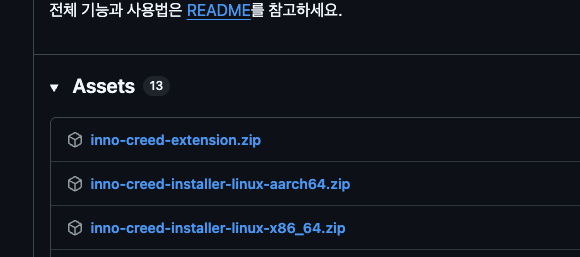
inno-creed-extension.zip — 이것을 누릅니다.보통 다운로드 폴더에 저장됩니다. 크기는 30KB 남짓으로 아주 작습니다.
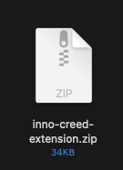
inno-creed-extension.zip.zip 파일을 더블클릭하면(Windows는 오른쪽 클릭 → 압축 풀기)
같은 자리에 inno-creed-extension 폴더가 생깁니다.
폴더 안에는 manifest.json·background.js·icons 세 가지가 들어 있습니다.
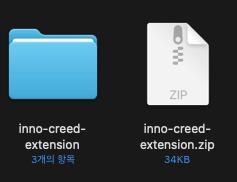
폴더 안의 세 가지 중 하나라도 지우면 확장이 로드되지 않습니다.
특히 icons 폴더를 지우면 Chrome이 설치 자체를 거부합니다.
압축 푼 inno-creed-extension 폴더를 앞으로도 그대로 둘 자리로 옮겨 두세요.
예를 들어 C:\Tools\inno-creed-extension 처럼, 실수로 건드리지 않을 만한 곳이 좋습니다.
🚨 이 폴더는 절대 지우거나 옮기면 안 됩니다.
Chrome은 이런 방식으로 설치한 확장을 자기 안에 복사해 두지 않고, 여러분이 지정한 그 폴더를 계속 읽습니다. 폴더를 지우거나 다른 곳으로 옮기면 확장이 그대로 멈추고, 아마란스 연동도 조용히 끊깁니다.
다운로드 폴더처럼 주기적으로 정리하는 자리, 바탕화면의 임시 폴더는 피하세요. 이미 옮겨 버렸다면 8~10단계를 다시 하면 됩니다.
주소창 오른쪽 끝, 점 세 개가 세로로 찍힌 버튼입니다.
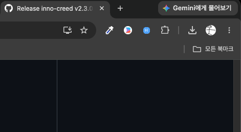
메뉴에서 확장 프로그램에 마우스를 올리면 하위 메뉴가 펼쳐집니다. 거기서 확장 프로그램 관리를 누릅니다.
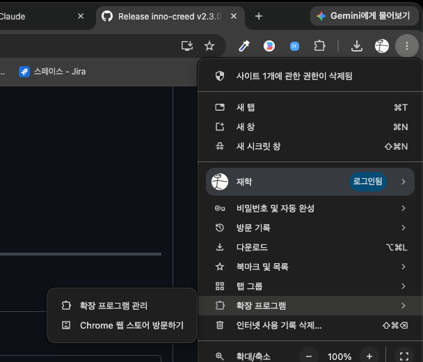
확장 프로그램 관리 선택" class="mid">주소창에 chrome://extensions를 직접 입력해도 같은 화면이 열립니다.
지금 설치돼 있는 확장들이 카드로 나열된 화면입니다. 여기서 다음 단계를 진행합니다.
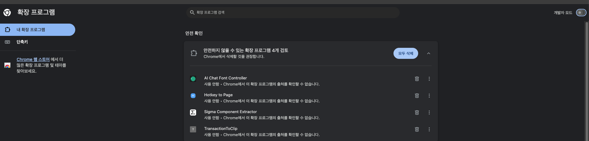
"안전하지 않을 수 있는 확장 프로그램 검토" 같은 안내가 위에 떠 있어도 무시하고 진행하세요. 기존에 설치돼 있던 다른 확장에 대한 Chrome의 일반 안내입니다 — [모두 삭제]는 누르지 마세요.
화면 오른쪽 위의 개발자 모드 토글을 눌러 파란색(켜짐)으로 만듭니다.
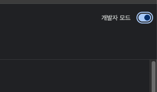
개발자 모드를 켜면 화면 왼쪽 위에 버튼 세 개가 새로 생깁니다. 그중 맨 왼쪽 압축해제된 확장 프로그램 로드를 누릅니다.
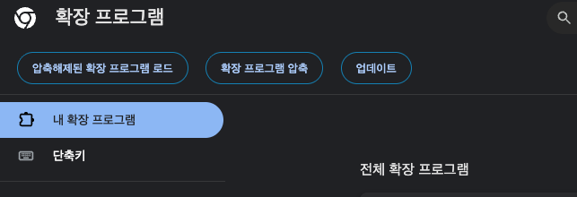
폴더 선택 창이 열리면 inno-creed-extension 폴더를 고르고
[선택](Windows는 [폴더 선택]) 버튼을 누릅니다.
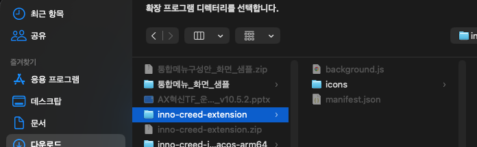
background.js·icons·manifest.json이 보입니다.⚠️ .zip 파일이 아니라 폴더를 골라야 합니다.
목록에서 이름이 같아 헷갈리기 쉬우니, 아이콘이 폴더 모양인 쪽을 고르세요.
확장 목록에 inno-creed 크레덴셜 브릿지 카드가 생기고 오른쪽 아래 토글이 켜져 있으면 성공입니다.
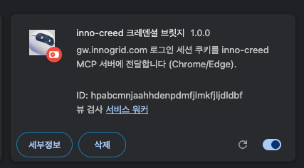
hpabcmnjaahhdenpdmfjlmkfjljdldbf로 보이면 정상입니다 — 이 값은 어디에 풀든 항상 같습니다.카드에 "서비스 워커: 비활성"이라고 떠도 정상입니다. 필요할 때만 깨어나는 방식이라 평소에는 비활성으로 표시됩니다.
마지막입니다. 같은 브라우저에서 gw.innogrid.com에 접속해 로그인하세요. 확장이 로그인 세션을 감지해 inno-creed에 자동으로 전달합니다.
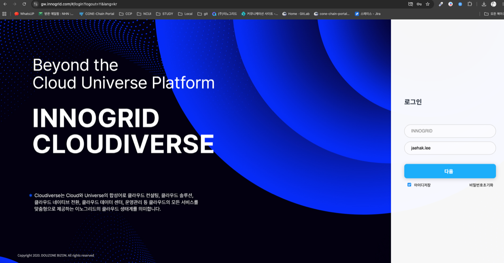
✅ 여기까지가 전부입니다. 확장을 다시 로드하거나 무언가를 복사해 넣을 필요는 없습니다.
터미널(Windows는 PowerShell)에서 아래를 실행하면 크레덴셜을 어디서 잡았는지, 실제 인증이 되는지까지 한 화면에 보여줍니다.
inno-creed doctor[실제 인증 확인]이 ✅면 끝난 것입니다. 토큰 값은 출력되지 않으므로 그대로 캡처해 공유해도 됩니다.
Claude에서 도구 목록이 보이는 것과 인증 성공은 별개입니다. 서버는 크레덴셜이 없어도 실행되고, 도구를 부를 때 로그인 안내를 돌려줍니다.
과정은 같고 이름과 위치만 다릅니다.
| 단계 | Chrome | Edge |
|---|---|---|
| 관리 화면 | chrome://extensions | edge://extensions · ⋯ 메뉴 → 확장 |
| 개발자 모드 위치 | 화면 오른쪽 위 | 화면 왼쪽 아래 |
| 불러오기 버튼 | 압축해제된 확장 프로그램 로드 | 압축 풀린 파일 로드 |
⚠️ Edge를 새로 켤 때 "개발자 모드에서 확장 사용 해제" 경고가 뜰 수 있습니다. 여기서 [확장 사용 해제]를 누르면 방금 설치한 확장이 꺼집니다 — [나중에]를 누르세요. Edge가 개발자 모드 확장 전체에 주기적으로 띄우는 일반 경고이지, inno-creed에 문제가 있다는 뜻이 아닙니다.
Chrome과 Edge 둘 다에서 쓰려면 같은 폴더를 양쪽에 각각 로드하면 됩니다.
확장이 동작을 멈춥니다. zip을 다시 받아 압축을 풀고, 보관할 자리에 둔 뒤 9~10단계(압축해제된 확장 프로그램 로드 → 폴더 선택)를 다시 하면 됩니다. 확장 ID는 바뀌지 않으므로 다른 설정을 손댈 필요는 없습니다.
폴더를 잘못 골랐을 때 나옵니다. manifest.json이 바로 안에 들어 있는 폴더를 골라야 합니다.
압축을 두 번 풀어 inno-creed-extension/inno-creed-extension/처럼 겹쳐 있는 경우가 흔하니,
폴더를 열어 manifest.json이 보이는 층을 선택하세요.
세 가지를 확인하세요.
① 같은 브라우저에서 gw.innogrid.com에 로그인돼 있는지.
② 확장 카드의 토글이 켜져 있는지.
③ native host 등록 — 이건 MCP 서버가 뜰 때마다 자동으로 맞춰지므로 보통 신경 쓸 필요가 없습니다.
수동으로 다시 걸려면 inno-creed --install-extension-host입니다.
그래도 안 되면 inno-creed doctor 결과를 확인하세요.
확장 설치가 불가능한 환경에서는 브라우저 개발자 도구(F12) → Application → Cookies에서 쿠키 값을 직접 복사해 넣는 최후 수단이 있습니다. 전체 설치 문서의 "크레덴셜 직접 지정"을 참고하세요.